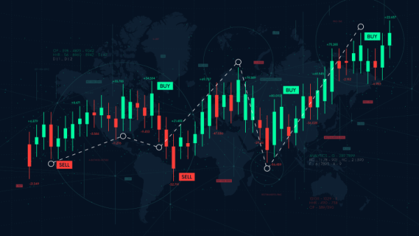

Led product development and scaling for ETF and commodities trading

Led product development and scaling work for ETF trading. Within one year, reduced head count for the desks I covered from six to two. Success led to me moving to build out Execution Desk, a firmwide initiative to unite traders, engineers, and quantitative researchers to optimize and centralize trading. Became youngest member of Trader Tech Team and won Coder of the Year in 2024.
Based on previous experience replicating market indices at Goldman Sachs, at Flow Traders I began as an index ETF trader. This role required me to work with the most latency sensitive products in the world: SPY, QQQ, DIA, etc.; levered products; and Nasdaq, Russell, and S&P500 futures.
I had a lot of success automating this setup to account for volatility, holding costs, and future rates, reducing trading hours by half and allowing more development time.
With these time gains, I was tasked with automating all US futures-based trading. In this role, I combined our equities index desk; volatility, energy, metals, and grains; and cryptocurrency trading desks, reducing trader head count from five to two.
The improvement in the setup resulted in implementation of new technologies, raising profit by 40% for the commodities desk and increasing the number of trades by 400%. Owing to my interest in sustainability, I even introduced new trading of carbon credits and transition metals like lithium.
With my demonstrated successes of building out new trading strategies, scaling existing workflows, and conducting microstructure research, I began building out the Execution Desk with one other trader, an initiative meant to manage and improve trading across all products (domestic/international equities, corporate/emerging/treasury bonds, commodities, etc.). I designed research projects with the quant team to inform our efforts and worked extensively with our automation, engineering, and networking teams to reduce latency and create new trading tools. We successfully averaged over 90% of the entire US office trading volumes by the end of 2024, resulting in higher returns, more trades, and fewer adverse events.
As part of the Execution Desk role, I took on a significant product development role, becoming the youngest member of the global Trader Tech Team. I specialized in new technology development, working with automation and networking teams globally to prioritize and test new tools.
As a result of my efforts, at the end of 2024 I won the Coder of the Year award.